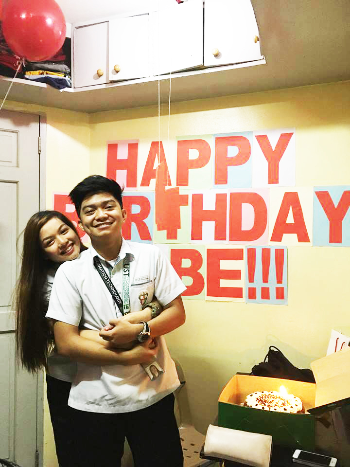

First of all, let me still call you babe. Babe, sorry for everything na nagawa kong mali sayo. Sorry kung naging inconsiderate ako sa situation mo and sa feelings mo. Sorry na hindi ko nalaman agad na may problem ka din pala nung time na nagiinarte ako. Sorry kung paulit ulit kitang inaway at hindi ko natupad yung mga promise ko na mas iintindihin na kita. Sorry kung naging mahina ako.
Alam ko hindi pa sapat lahat ng sorry ko para mabura lahat ng sakit na nagawa ko sayo. Pero hayaan mo lang ako na makapagsorry at makapageffort sayo. In this way, kahit papaano siguro maiparamdam ko sayo kung gaano ka kalahaga sa akin. Hindi na rin naman siguro mahalaga sayo kung gaano kita kamahal o gaano ka kahalaga sakin kasi nga di ba pagod ka na. But I just want to let you know na I'm still willing to do everything wag ka lang maggive up sa akin. Kahit ipagtabuyan mo pa ako o kahit ilang masasakit na salita na ang nasabi mo sa akin, oo nakakamanhid pero ayaw ko pa rin talagang maggive up sa'yo kasi mahal na mahal kita.
I tried to live my life without you for the past few days, almost 2 weeks na nga eh and sobrang hirap pala talaga. Alam mo rehd sobrang miss na miss na kita. Kahit saglit lang tayo nagkakausap sa isang araw dati, kahit pala yung mga simpleng text mo at pagkamusta nakakamiss pa din. Sobrang halaga pala ng mga bagay na yun para maiparamdam mo sa isang tao kung gaano mo talaga siya kamahal. Maaaring naghahanap pa ako ng higit pa dun kasi sobrang namimiss kita pero ngayon babe, kahit isang seen mo lang okay na nga sa akin e. Gusto ko lang naman yung pakiramdam na may pake ka pa din sa akin.
Eto yung line ng message ko nung anniversary natin... "Ganun naman yata talaga diba? May mga bagay na sa una hindi mo makita yung halaga pero kapag nakuha na ng iba dun mo makikita na mahalaga pala sila. Maswerte lang ako baby kasi kahit binalewala kita nung una, ibinalik ka pa rin sa akin ni Lord. Salamat kasi pinagbigyan mo rin yung "tayo"."
Eto na naman tayo sa situation na yun. Sana sa pagkakataon na to mabigyan ulit tayo ng pagkakataon na maayos to. Sana bigyan ulit ako ng chance ni Lord na patunayan sayo na kaya ko talagang gawin ang lahat wag ka lang mawala sa akin. Sobrang mahal kita, Rehd. Mahal na mahal.
At ito din ung isa pang line ng message ko nung anniversary, hanggang ngayon ito pa rin naman yung gusto kong
sabihin sayo...
"Ngayon, malayo ka, ang maipapangako ko lang sayo is maghihintay ako sayo kahit gaano pa katagal.
Hinding hindi ko ibebreak sayo yung promise ko na ikaw lang talaga, na tayong dalawa hanggang sa dulo,
na magpapakasal tayo. Alam ko darating yung panahon na loloobin ni Lord na magkasama tayo ulit.
I know that what is happening to us right now is to make us stronger and learn more things eventhough
we are not together. Siguro nga kung hanggang ngayon araw-araw tayo magkasama, baka nagbreak na rin tayo
sa sobrang dalas mag-away. I'm not saying that yun ang mangyayari kapag magkasama tayo. What I mean is
because of this kind of relationship, we learned how to handle fights, emotions and temper and to fix
our misundestandings without having to say the words, "Ayoko na. Break na tayo." Although, there are a lot of times
that we almost breakup na talaga. Lalo na nung bago-bago ka pa lang sa Canada. But thank God, He both changed
us. At ngayon, naniniwala ako na we are stronger than ever."
Kaso lang ang lungkot kasi bumalik na naman tayo sa ganung type ng relationship na palaging break ang solusyon. Siguro kung mabibigyan ulit tayo ng pagkakataon na maayos to, ipaparamdam ko sayo na yung relationship na to is really not worth breaking. *hahaha di ko alam kung tama yung grammar na yun*
"So now that we are about to begin a new chapter of our relationship, I pray for us to become much stronger this another year. I hope that the days, weeks, months that will come will be much more memorable and exciting. I also hope that there will be really NO MORE BREAKUPS. I am also looking forward to more happy moments with you this another year. And to be realistic, sana hindi tayo magsawa kasi yehey nakalipas na ang isang taon hahahaha. Sana hindi ka magbago at sana ako pa rin hanggang sa mga susunod pang 69 million years. I really hope and pray to see you very soon. I can't wait to hug and kiss you, again. I miss you baby. I love you so much!"
That line really hit me so bad. Ilang months palang nakalipas mula sa anniversary natin parang nandito na tayo sa dulo. Pero hindi pa rin ako nawawalan ng pag-asa. Naniniwala pa din ako na pagsubok lang satin to para lang siguro matauhan tayo na hindi laging break ang solusyon at dapat mas mag intindihan tayo lalo kasi nga LDR tayo. I still love you, babe. Please give us another chance. I'm really really sorry.
